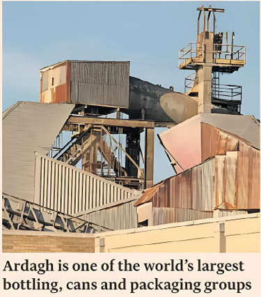

EUAN HEALY AND ROBERT SMITH
LONDON

Paul Coulson has struck a deal with Ardagh Group bondholders for shareholders to receive $300 million to walk away from the debt-laden packaging group that the Irish entrepreneur built through decades of acquisitions.
Ardagh, which is based in Luxembourg and makes glass bottles and metal cans in Europe, the US and Africa, announced the restructuring deal yesterday, capping more than a year of negotiations with creditors owed more than $10 billion built up in the era of cheap money and low interest rates.
Coulson is ceding control of Ardagh to a group of bondholders under the terms of the deal, ending a decades-long streak as one of the most significant figures in the European junk bond market.
The 72-year-old transformed Ardagh into one of the world’s largest packaging groups through leveraged buyouts.
While Coulson controls more than 50 per cent of Ardagh’s voting rights, his economic stake is smaller at 36 per cent so he will receive just over $100 million of the $300 million payout.
Control is set to be passed to Ardagh’s unsecured bondholders as part of a debt-for-equity swap. The group’s riskiest $1.7 billion of payment-in-kind bonds will be fully written off in exchange for a small minority stake in the business.
Bondholders will also provide $1.5 billion of new funding to the group while a loan that Apollo Global Management provided last year will be repaid in full.
Coulson’s investment in Ardagh began with a troubled airline leasing business in the 1990s. After winning a payout from the investment bank that advised on a soured acquisition that brought his company to its knees, Coulson used the cash to acquire a stake in a small Dublin-based bottling company.
A series of debt-fuelled acquisitions over the next two decades transformed it into one of the world’s biggest producers of glass and metal drinks containers.
Ardagh’s frequent issuance of junk bonds made it one of the largest players in Europe’s market for riskier debt.
But interest rate and energy cost increases in recent years have hit the highly levered business, which faces billions in upcoming maturities.
After creditors last month offered Ardagh shareholders $250 million to walk away, the Financial Times reported that Coulson had insisted on them receiving $300 million to consider giving up the company, along with other conditions around securing the money swiftly.
“The transaction will preserve the group’s ownership of its glass and metal packaging businesses and puts in place a sustainable capital structure with significantly lower leverage and an enhanced maturity profile,” said Herman Troskie, Ardagh group chair.